Timbre V1.0
Overview #
Timbre is a library for space-aware occlusion, diffraction, and reverb within static environments. The goal is to make it easy to set up audio that reacts to the world in different ways based on its physical properties — sounds muffle behind walls, bend around corners, and ring differently depending on the room they're in.
Timbre does not aim to simulate sound acoustics realistically — instead, it aims to approximate these effects in a performant manner, well tuned for individual gameplay needs.
Rather than chasing one physically "correct" result, every sound exposes a rich set of properties that shape how it behaves as it moves through your world — how much corners muffle it, how much bass survives a wall, how far it travels before the air swallows it, how directional it is, and how easily it leaks through closed doors. A gunshot can punch through a building while a voice drowns out behind a single door — you decide what serves your game, and it all stays cheap enough to run on dozens of sounds at once.
Timbre has two main pieces:
- Scene Editor — a Studio plugin for placing propagation nodes, configuring portals, generating reverb rooms, and testing paths before you ship.
- Runtime Module — the client-side module that runs in-game, handling all occlusion, diffraction, and reverb in real time.
Scene Editor Guide #
The Timbre Scene Editor is a Studio plugin with two main tools:
- Node Editor — lets you create nodes, create portal nodes, create connections between them, and then bake and test your paths.
- Room Editor (optional) — lets you automatically (or manually) generate reverb rooms, then configure reverb properties for each room.
Load / Unload Map #
The first thing you need to do is select a Model in the Explorer that represents your map, then click Load from Selection to load it into the editor. All node data, baked paths, and reverb room data will be stored as attributes on this model.
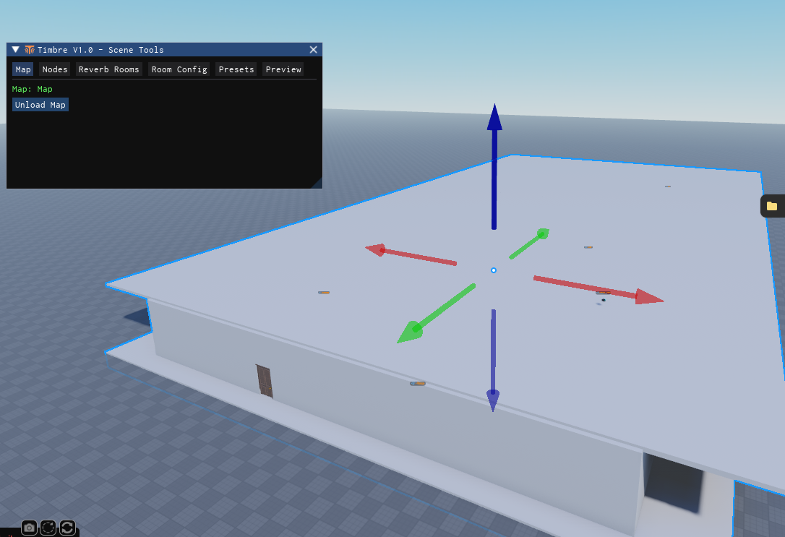
Create Nodes #
Switch to the Nodes tab and start placing propagation nodes throughout your map. These nodes define the paths that sound can travel along.
You have a few placement modes:
- Corner Nodes (default) — automatically places nodes along the vertical edges of walls. This is how you'll want to place most of your nodes.
- Free Place — uncheck "Corner Node" to place nodes freely in the world at any position.
- Portal Nodes — uncheck "Corner Node" and check "Portal" to create portal nodes for doors, windows, and other dynamic openings.
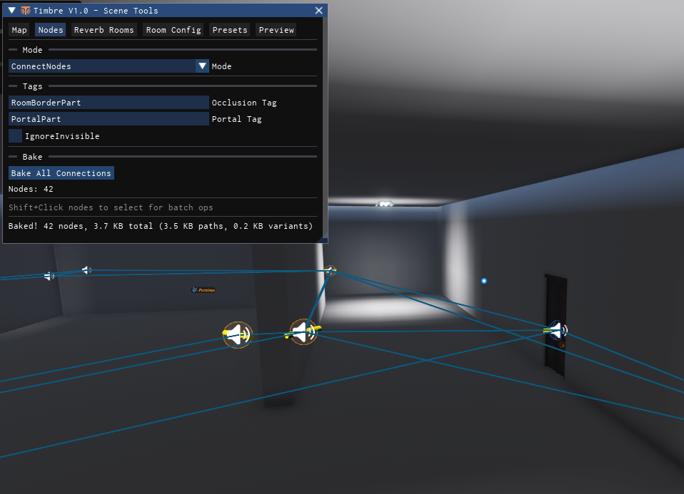
Portal Nodes #
Portal Nodes are special nodes that can be opened or closed at runtime. Use them for anything the player can interact with to change sound propagation:
- Doors
- Breakable windows
- Shutters, gates, blast doors
When a portal is closed, it adds a configurable navigation cost and muffle penalty to any sound path that passes through it. You'll configure these values in Step 4.
Connect & Bake #
Once all your nodes and portal nodes are placed, switch to Connect Nodes mode. Click and drag between nodes to create connections — these are the edges sound can travel along.
When you're happy with the graph, click Bake All Connections. This precomputes optimal paths between every pair of nodes so the runtime can look them up instantly.
Portal Costs #
Switch to Portals mode to configure each portal's behavior when closed. Set the cost and muffle values under the Portal Costs section of the panel, then click on a portal node to apply them.
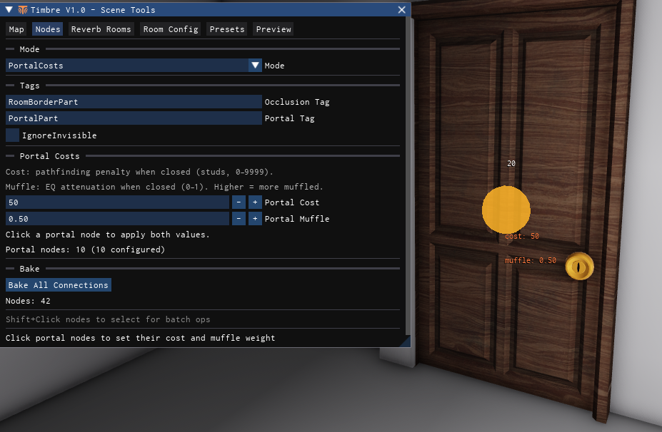
- Portal Cost — the pathfinding penalty added when this portal is closed (in studs, 0–9999). Higher values make the pathfinder prefer routes that avoid the closed portal. A value of 50 means the closed portal is equivalent to adding 50 studs of extra distance.
- Portal Muffle — the EQ attenuation applied when sound passes through this closed portal (0–1). Higher values produce more muffling. A value of 0.5 is a moderate muffle suitable for a standard door.
Imagine a room with both a closed door and a thin closed window. You want sound to leak through the window more easily and with less muffling than through the heavy door:
- Window — Cost:
25, Muffle:0.25(sound passes through more easily, stays clearer) - Door — Cost:
50, Muffle:0.50(higher penalty, more muffled)
With these values the pathfinder will prefer routing sound through the window when both are closed, and the sound that comes through it will be less muffled than what leaks through the door.
Portal Sizes #
By default, an occluded sound exits through the center of its portal node. From far away that's completely fine — but up close it can be jarring. Picture standing right next to an open doorway while a sound plays down the hallway to the left: the path exits at the door node, so you hear the sound coming from the middle of the doorway, dead ahead — not from the left, where it's actually coming from.
Portal Sizes solve this. Give a portal node the dimensions of its opening, and at runtime Timbre slides the emitter along the portal's plane toward where the sound is actually coming from, clamped to the opening's bounds. A sound down the hall to the left gets pushed to the left edge of the doorway; a sound from above a tall window plays from its top edge.
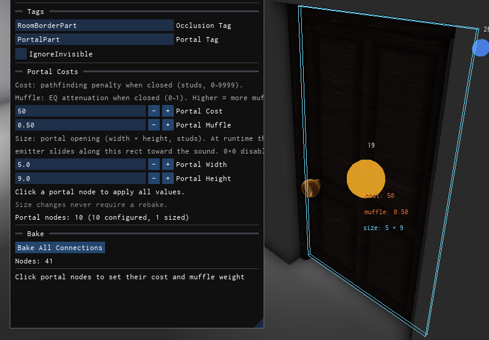
To set up a portal size:
- Switch to Portals mode and find the Portal Size section in the panel.
- Enter the opening's Portal Width and Portal Height in studs — typically just the size of the doorway or window the node sits in.
- Hover over a portal node — a preview box shows the bounds you're about to apply.
- Click the portal node to apply. Every sized portal draws its bounds as a box gizmo so you can sanity-check the fit at a glance.
Portal sizes default to 0 × 0, which disables edge-sliding entirely — unsized portals behave exactly as before.
Sizes are purely a runtime positioning effect — changing them never requires a rebake.
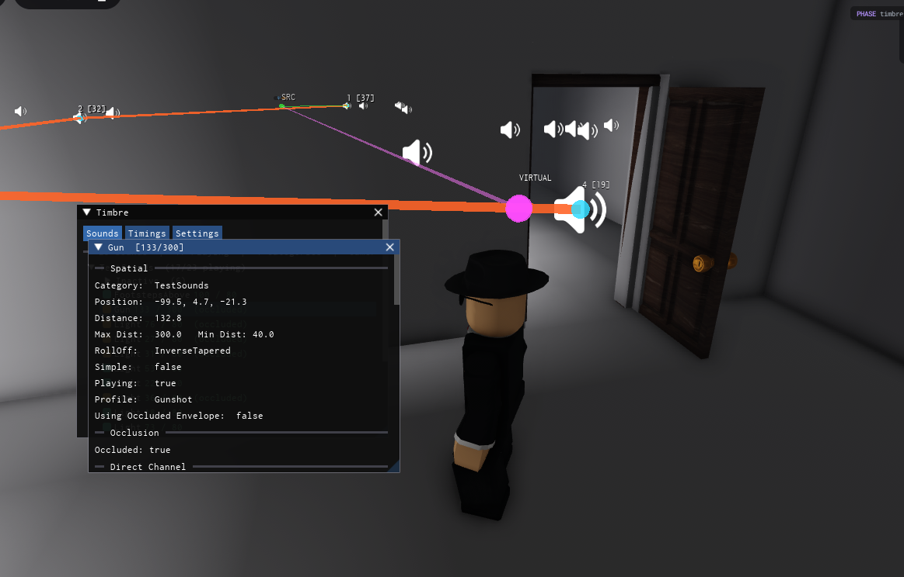
And now you can see the emitter being pushed to the edge of the portal — the sound properly comes from the left, right where it should!
Test Paths #
Switch to Test Path mode to verify your setup. Click to place a source and listener point, and the editor will visualize the best path between them, including cost and angle breakdowns.
Click on any portal node to toggle its open/closed state and see how the path changes in real time. You can also click and drag either endpoint to reposition it and recompute a new path.
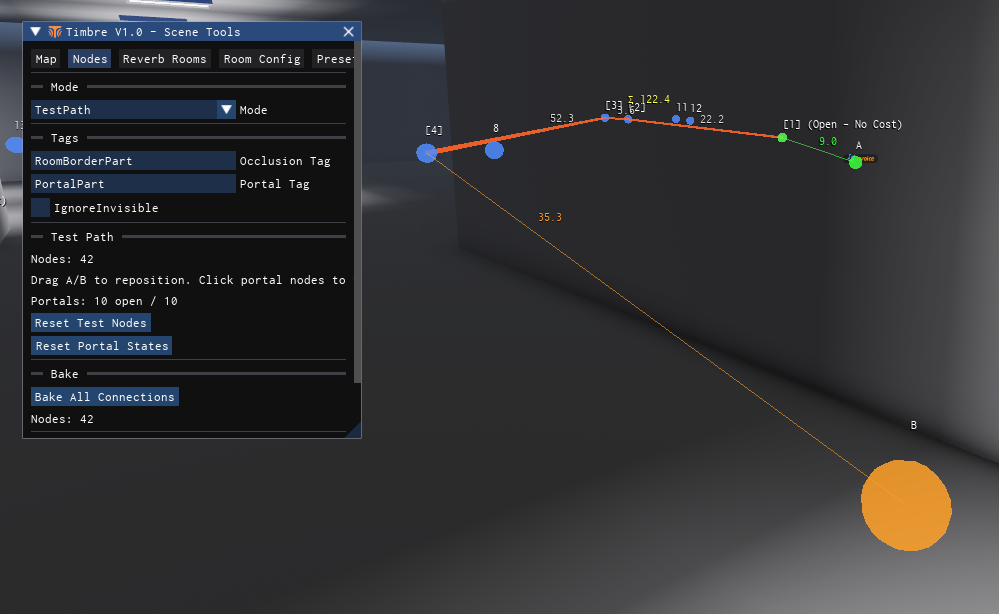
Reverb Rooms #
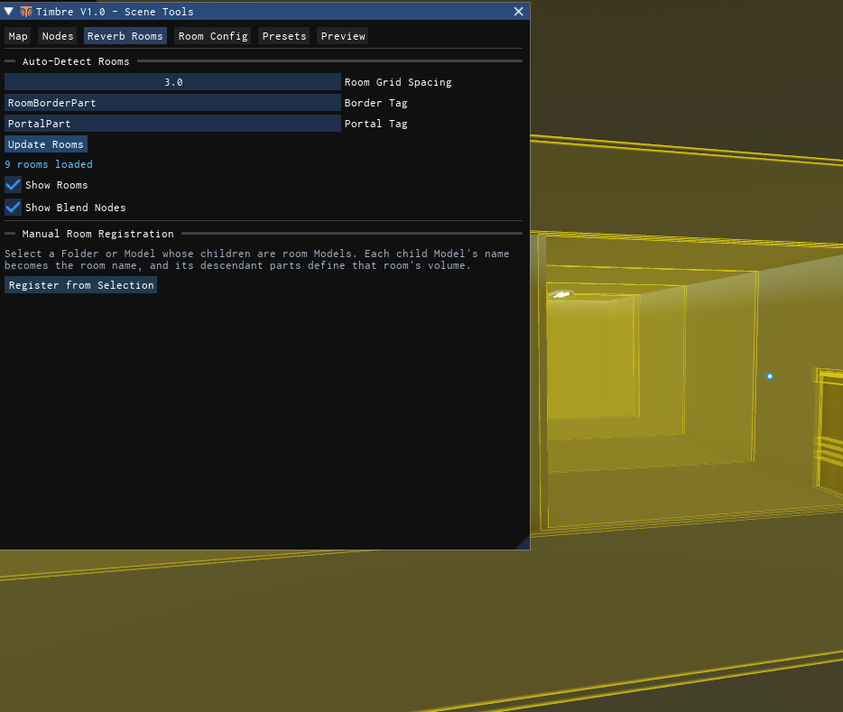
To generate reverb rooms, you first need to configure two tags that describe your map's geometry:
- Border Tag — the parts that make up the boundaries of your map: walls, ceilings, floors, and anything else that defines where sound can and can't travel.
- Portal Tag — the parts that belong to portals (doors, windows). Tag the actual door/window parts with this.
A part must only have one of these tags — never both. A wall is a border, a door is a portal.
The border tag and portal tag must be different tag names.
Once your tags are set, click Update Rooms to automatically generate room volumes from your geometry.
Configure Rooms #
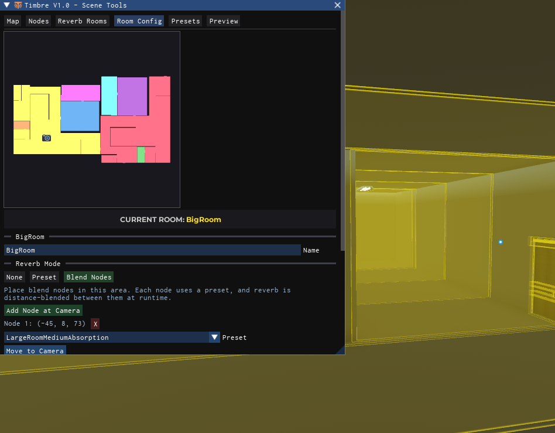
If rooms were generated successfully, the Room Config tab shows a minimap of your map with color-coded rooms. The room your camera is currently inside is displayed at the top.
Each room can be set to one of three reverb modes:
- None — no reverb applied in this room.
- Preset — a single reverb preset is applied uniformly throughout the room. Good for simple spaces like hallways or small rooms.
- Blend Nodes — multiple reverb presets are placed at specific positions within the room. The runtime blends between the nearest visible nodes using inverse-distance weighting. This is ideal for large or complex spaces where reverb should vary throughout the space.
In Preset mode, you simply pick a preset from the dropdown and it applies to the entire room.
In Blend Nodes mode, each node within the room gets its own preset assignment. The runtime automatically interpolates between the nearest nodes based on the listener's position, creating smooth spatial transitions.
Presets #
The Presets tab is where you create and edit reverb presets. Each preset defines a full set of AudioReverb properties (decay time, wet level, diffusion, etc.) plus optional room tone properties for EQ coloring.
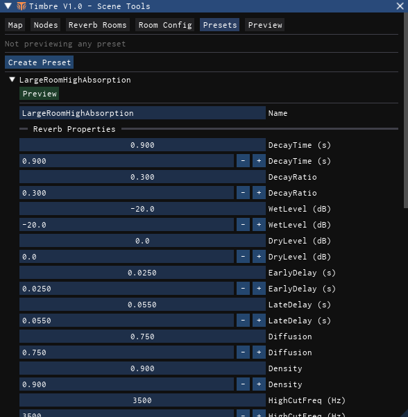
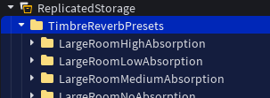
Room Tone Settings
Each preset can also have Room Tone properties that control how the room colors the sound with EQ. These work alongside the reverb properties to make each space feel distinct.
- BrightnessLow — how much the room boosts or cuts low frequencies. Values above 1 add bass warmth, below 1 thins it out.
- BrightnessHigh — how much the room boosts or cuts high frequencies. Values above 1 make the room sound brighter, below 1 makes it duller.
- MeanFreePath — the average distance (in studs) sound travels before hitting a surface. Small rooms have low values (tight reflections), large open spaces have high values (spacious feel).
- Enclosure — how "closed in" the space feels, from 0 (open air) to 1 (fully enclosed). Higher values make the room tone EQ effect stronger.
- Strength — an overall multiplier on the room tone effect. At 1 (default) the full effect is applied. Lower values dial it back if the coloring is too intense.
Presets you create here will appear in the room and blend node dropdowns. They are stored inside a TimbreReverbPresets tagged folder that the runtime reads at startup.
Preview Sounds #
The Preview tab lets you hear what your reverb rooms sound like without leaving Studio. Paste an audio asset ID, hit play, and the preview emitter will use whatever reverb preset is configured for the room at its current position.
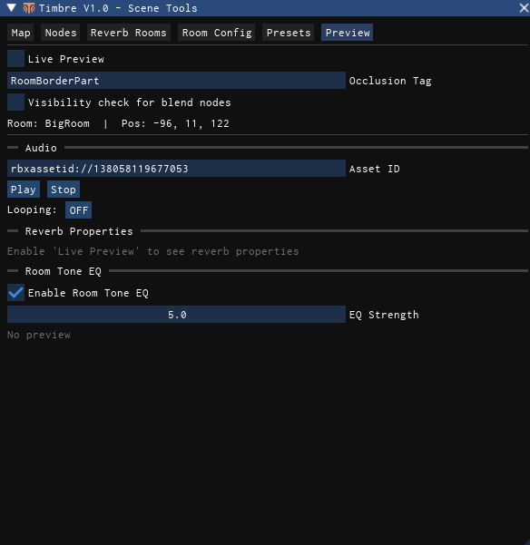
Timbre Runtime #
Once your scene is authored in the editor, getting Timbre running in-game is straightforward. Require the module and follow the steps below.
local Timbre = require(path.to.TimbrePackage.Timbre)Set Tags #
Tell Timbre which tagged parts make up your world geometry so it can build its raycast model.
function Timbre:SetOcclusionTags(
occlusionPartTag: string,
portalPartTag: string,
dynamicPartTag: string?
)"RoomBorderPart" for borders and "PortalPart" for portals.
Timbre:SetOcclusionTags("RoomBorderPart", "PortalPart", "PortalPart")| Parameter | Type | Description |
|---|---|---|
| occlusionPartTag | string | Tag for the static parts that block sound — walls, floors, ceilings, and anything that defines the boundaries of your map. |
| portalPartTag | string | Tag for portal parts — doors, windows, and other openings that can be toggled open or closed at runtime. These are included in the occlusion filter but treated specially by the sight system. |
| dynamicPartTag | string? | Optional tag for parts that move at runtime (e.g. a sliding door, a rotating wall). Timbre tracks CFrame and CanCollide changes on these parts each frame and updates its internal raycast WorldModel accordingly. You can just leave this as "PortalPart" for now if your doors open and close physically. |
Start #
Start the Timbre runtime. This creates the instance pool (if enabled), loads any Sound Profiles and Concurrency Groups from your game, and begins the per-frame update loops for occlusion, diffraction, and reverb.
Timbre:Start()Timbre:Start() after setting your tags, but before attaching any sounds. It only needs to be called once.
Load / Unload Map #
Load the same map model you authored in the editor. Timbre will read the baked propagation data and reverb room data from its attributes. When you're done — or switching to a different map — call UnloadMap.
local LoadedMap = Timbre:LoadMap(workspace:WaitForChild("Map"))
-- Later, when switching maps or cleaning up:
Timbre:UnloadMap()Portal Events #
Toggle a portal node's open/closed state at runtime. Timbre finds the closest portal node to the given position and updates it.
function Timbre:SetPortalNodeState(position: Vector3, open: boolean)LoadedMap:ObserveTag() watches for tagged instances within your map and cleans up automatically when the map is unloaded. This is the recommended way to wire up portal events:
LoadedMap:ObserveTag("Door", function(newDoor)
local doorOpenValue: BoolValue = newDoor:WaitForChild("Open")
local doorPosition: Vector3 = newDoor:GetPivot().Position
-- Set initial portal state
Timbre:SetPortalNodeState(doorPosition, doorOpenValue.Value)
-- Update when the door opens/closes
local conn = doorOpenValue:GetPropertyChangedSignal("Value"):Connect(function()
Timbre:SetPortalNodeState(doorPosition, doorOpenValue.Value)
end)
-- Cleanup if the door is removed
return function() conn:Disconnect() end
end)Playing Audio #
Timbre does not use Roblox's legacy Sound objects. Instead, it works with AudioPlayer instances from the new audio API. When you attach an AudioPlayer to Timbre, it automatically wires up the entire audio graph for you — emitters, faders, EQ, reverb, and distance attenuation — so you just focus on playing and stopping sounds.
Each attached sound gets two channels:
- Direct Channel — an emitter at the source position. When the sound is occluded, this channel can apply direct-occlusion muffling based on diffraction data while keeping the emitter at the true source location. Useful for sounds close to the listener where you want them muffled but not repositioned.
- Diffraction Channel — an emitter at a virtual position computed from the best propagation path around obstacles. The sound appears to come from the nearest visible exit point of the path. This channel handles the repositioned, muffled version of the sound when occluded.
Creating and destroying AudioPlayers every time a sound plays is wasteful and might cause issues if done frequently enough. To be safe, whenever possible you should create AudioPlayers ahead of time and reuse them.
For example, for character footsteps instead of spawning a new player for every footstep cue, you could create an AudioPlayer parented to each foot, attach it to Timbre, then on each cue:
- Set the
.Assetproperty to the appropriate material sound - Call
:Play()
Sound Profiles #
Sound Profiles let you define reusable parameter presets for groups of sounds. Create a folder named TimbreSoundProfiles in your game, then add a SoundProfiles subfolder containing named profile folders. Each profile folder holds ValueBase children whose names and values match the parameter keys.
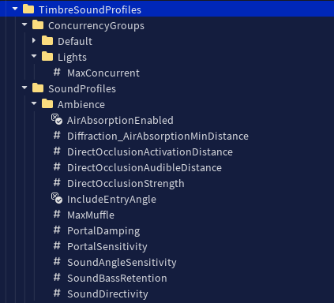
Parameters are resolved in a three-tier chain: explicit params → Sound Profile → built-in defaults. If you pass MinDistance = 10 in the params table, that wins. If you don't, Timbre checks whether the sound has a named Profile and looks up the value there. If neither provides it, the built-in default is used.
You can limit how many sounds of a given type play at once using Concurrency Groups. Add a ConcurrencyGroups subfolder to your TimbreSoundProfiles folder, then create named group folders each containing a MaxConcurrent IntValue. Sounds with a matching ConcurrencyGroup param are automatically silenced (faded out) when the group limit is exceeded — closest sounds to the listener are kept.
Timbre:Attach() #
Attach an AudioPlayer to the Timbre runtime. Timbre will manage occlusion, diffraction, and reverb for this sound automatically.
SoundObject is an internal handle — you typically don't need to interact with it directly.
function Timbre:Attach(
audioPlayer: AudioPlayer,
params: {[string]: any}?,
category: string?,
identifier: string?
): SoundObject| Parameter | Type | Description |
|---|---|---|
| audioPlayer | AudioPlayer | The AudioPlayer instance to attach. Must be parented to a BasePart or Attachment that defines its world position. |
| params | {[string]: any}? | Optional table of sound parameters. Values here override matching Sound Profile defaults, which in turn override the built-in defaults. See below for available keys. |
| category | string? | Groups the sound in the debug explorer (e.g. "SFX", "Ambient", "Music"). |
| identifier | string? | Display name for this sound in the debug explorer (e.g. "Footstep", "Gunshot"). |
Reference a profile by name in the params table, and any other sound settings you want:
local soundObject = Timbre:Attach(audioPlayer, {
MinDistance = 10,
MaxDistance = 80,
Volume = 1,
Pitch = 1,
Profile = "Footsteps",
}, "CharacterSounds", "Footstep")Timbre:Detach() #
Detach an AudioPlayer from the Timbre runtime. Optionally fade out before fully disconnecting.
function Timbre:Detach(
audioPlayer: AudioPlayer,
fadeOutDuration: number?,
onComplete: (() -> ())?
)| Parameter | Type | Description |
|---|---|---|
| audioPlayer | AudioPlayer | The AudioPlayer to detach. Must have been previously attached via Timbre:Attach(). |
| fadeOutDuration | number? | If provided, the sound fades out over this many seconds before being fully cleaned up. If omitted, cleanup is immediate. |
| onComplete | (() -> ())? | Callback fired after the fade-out completes and the sound is fully cleaned up. Safe to destroy the AudioPlayer here. |
-- Immediate detach
Timbre:Detach(audioPlayer)
-- Fade out over 1 second, then destroy the player
Timbre:Detach(audioPlayer, 1, function()
audioPlayer:Destroy()
end)Timbre:SetListener() #
Override the default camera listener with a custom part or attachment. Useful for first-person games where audio should be relative to the character's head rather than the camera.
function Timbre:SetListener(listener: (Attachment | PVInstance)?)| Parameter | Type | Description |
|---|---|---|
| listener | (Attachment | PVInstance)? | The part or attachment to use as the listener. Pass nil to revert back to the default camera listener. |
If the provided listener is destroyed (removed from the DataModel), Timbre automatically reverts to the camera.
-- Use the character's head as the listener
Timbre:SetListener(character.Head)
-- Revert to camera
Timbre:SetListener(nil)Sound Parameters #
These are the per-sound settings you can pass into the params table when calling Timbre:Attach(), or define in a Sound Profile. If a value isn't provided explicitly or through a profile, the built-in default is used.
Distance & Rolloff #
Controls how far the sound can be heard and how it fades over distance.
| Parameter | Default | Description |
|---|---|---|
| MinDistance | 10 | Distance (in studs) at which the sound starts to get quieter. Inside this radius the sound is at full volume. |
| MaxDistance | 150 | Distance (in studs) at which the sound is no longer audible. Beyond this the sound won't be processed at all. |
| RollOffMode | InverseTapered | The distance attenuation curve. Matches Roblox's RollOffMode enum — Linear, Inverse, InverseTapered, or InverseSquare. InverseTapered is a good general-purpose choice. |
Diffraction #
Controls how the sound muffles and bends when traveling around obstacles.
| Parameter | Default | Description |
|---|---|---|
| SoundAngleSensitivity | 0.5 | How much bends in the path muffle the sound. Higher values mean sharper corners cause more muffling. Think of it as "how much does turning a corner affect this sound?" |
| SoundBassRetention | 1 | How much bass survives when the sound is muffled (0–1). At 0, bass drops off along with everything else. At 1, bass passes through walls almost untouched. |
| AirAbsorptionEnabled | false | Whether long paths muffle the sound just from distance, even without bends. When enabled, the further sound has to travel through the propagation graph, the more it gets muffled — simulating how air absorbs high frequencies over distance. |
| Diffraction_AirAbsorptionMinDistance | 0 | Distance (in studs) before air absorption kicks in. Sound traveling less than this distance through the graph doesn't get any air absorption muffle. Keeps nearby sounds clear. |
| IncludeEntryAngle | true | Whether to include the angle from the source to the first node when calculating bend cost. On by default for more precise geometry response — turn off for softer, more forgiving results. |
| SoundDirectivity | 0 | How directional the sound source is (0–1). At 0 the sound radiates equally in all directions. At higher values, sound is louder in the direction the source faces and more muffled behind it — useful for speakers, TVs, or megaphones. |
| MaxMuffle | 40 | The maximum EQ attenuation in dB that muffling can apply. Caps how quiet the high/mid/low bands can get. Higher values allow sounds to be more aggressively muffled. |
Direct Occlusion #
The direct occlusion channel plays the sound at its true source position with muffling, giving a "through the wall" effect when the listener is close. These settings control when and how it activates.
| Parameter | Default | Description |
|---|---|---|
| DirectOcclusionStrength | 1 | Multiplier on how much the direct channel gets muffled. At 1, full muffling. Lower values make the direct channel sound clearer even when occluded. |
| DirectOcclusionActivationDistance | nil | Distance (in studs) within which the direct occlusion channel activates. When nil, direct occlusion is disabled and only the diffraction channel is used. Set this to a value smaller than MaxDistance to get a "through the wall" effect when close to the source. |
| DirectOcclusionAudibleDistance | nil | Distance within which the direct channel is at full volume. Beyond this but inside the activation distance, it fades smoothly. Creates a gentle transition zone instead of a hard pop-in. |
Portals #
Controls how closed portals (doors, windows) affect this particular sound.
| Parameter | Default | Description |
|---|---|---|
| PortalSensitivity | 1 | Scales how much closed portals muffle this sound (0–1). At 1, full portal effect. At 0.3, portals are only 30% as effective. Explosions and gunshots might benefit from low values; quiet voices from high. |
| PortalDamping | 0 | Volume reduction per unit of portal muffle (0–1). At 0, closed portals only affect EQ — no volume loss. At 1, a portal with muffle 0.5 would halve the volume. Stacks across multiple portals. |
Convenience #
Quality-of-life settings applied directly to the AudioPlayer on attach.
| Parameter | Default | Description |
|---|---|---|
| Volume | nil | If set, applies this value to AudioPlayer.Volume when the sound is attached. Saves you a separate line of code. |
| Pitch | nil | If set, applies this value to AudioPlayer.PlaybackSpeed when the sound is attached. |
Sound Parameters - Examples #
Here are two profiles that show how these parameters work together to create very different-sounding results.
- Loud and far-reaching — large min/max distance
- Loses most of its energy from bending around obstacles — low angle sensitivity
- Takes a lot of bending to lose energy — little air absorption
- Retains its punchy bass — full bass retention through muffling
local GunshotProfile = {
MinDistance = 40, -- Loud within 40 studs
MaxDistance = 300, -- Far max distance
SoundAngleSensitivity = 0.2, -- Takes a lot of bending to lose energy
SoundBassRetention = 1, -- Retains its bass
SoundDirectivity = 0, -- Omni directional
AirAbsorptionEnabled = true, -- Muffle by distance, but:
Diffraction_AirAbsorptionMinDistance = 200, -- Don't muffle until 60% of max
IncludeEntryAngle = false, -- Only serious bends matter
DirectOcclusionStrength = 0,
DirectOcclusionActivationDistance = nil,
DirectOcclusionAudibleDistance = nil,
MaxMuffle = 40,
PortalSensitivity = 0.5, -- Closed portals muffle 50% less
PortalDamping = 0, -- Closed portals don't affect volume
}- Softer, not very far-reaching — moderate max distance
- Loses energy easily — air absorption kicks in early, high angle sensitivity
- Directional — louder in front of the speaker, quieter behind
- Drowns out easily through portals — full portal sensitivity and damping
local VoiceProfile = {
MinDistance = 10, -- Loud within 10 studs
MaxDistance = 150, -- Not very far max distance
SoundAngleSensitivity = 0.5, -- Drowns out quickly around bends
SoundBassRetention = 0.5, -- Retains only some of its bass
SoundDirectivity = 1, -- Directional
AirAbsorptionEnabled = true, -- Muffle by distance pretty soon
Diffraction_AirAbsorptionMinDistance = 40,
IncludeEntryAngle = true, -- Subtle angle differences muffle more
DirectOcclusionStrength = 0,
DirectOcclusionActivationDistance = nil,
DirectOcclusionAudibleDistance = nil,
MaxMuffle = 80, -- Energy drowns out quicker
PortalSensitivity = 1, -- Closed portals muffle at full effectiveness
PortalDamping = 1, -- Closed portals affect volume by the same amount
}Global Settings #
These are system-wide settings in TimbreSettings that control how the entire runtime behaves. They apply to all sounds globally and can be tweaked in the debug window at runtime.
Audio #
Core settings that affect how sound propagation and muffling work.
| Setting | Default | Description |
|---|---|---|
| REPOSITIONED_AUDIO | true | When enabled, occluded sounds are repositioned to the diffraction exit point so they appear to come from around the corner. When off, the emitter stays at the source and only EQ changes. |
| MAX_PATH_COST_SPREAD | 10.5 | How much more expensive a secondary path can be (vs. the best path) and still be blended in. Higher values blend more paths together for smoother transitions, but use more CPU. |
| BEND_ANGLE_PENALTY | 0.15 | Extra muffle penalty added for each bend in the path. More bends = more muffling. Higher values punish winding paths more aggressively. |
| DEFAULT_PORTAL_MUFFLE | 0.5 | Fallback muffle amount applied per portal if the portal doesn't have its own muffle cost set in the editor. |
| SKIP_PATH_BLENDING | false | When enabled, only the single best path is used — no blending with nearby alternate paths. Saves a bit of CPU but may sound less smooth. |
| EQ_SMOOTHING_SPEED | 0.1 | How fast the muffling EQ interpolates to its target value. Lower = smoother but slower transitions. Higher = snappier response. |
| POSITION_LERP_SPEED | 0.2 | How fast the diffracted emitter position moves to its target. Lower = more gradual repositioning. Higher = more immediate jumps. |
| FADER_SPEED | 1 | How fast channel volume faders interpolate. Controls the speed of fade-in/out when channels activate or deactivate. |
| REVERB_MUFFLE_SPEED | 0.1 | How fast the "shadow EQ" interpolates — this is the EQ on the inactive channel that tracks the active one so there's no pop when switching. |
| DIRECT_OCCLUSION_EUCLIDEAN_AIR_ABSORPTION | true | When enabled, the direct occlusion channel uses straight-line distance for air absorption instead of path cost. |
Listener #
| Setting | Default | Description |
|---|---|---|
| UseProvidedListener | false | When false, the camera is used as the listener. When true, Timbre uses whatever part or attachment you pass in via Timbre:SetListener() — useful for first-person games where you want audio relative to the character's head. |
Reverb #
Settings for the spatial reverb system.
| Setting | Default | Description |
|---|---|---|
| REVERB_INTERPOLATION_SPEED | 0.1 | How fast reverb properties blend when moving between rooms. Lower = slower, more gradual room transitions. |
| REVERB_RESCAN_DISTANCE | 0.5 | How far (in studs) the listener must move before the reverb system rescans for blend nodes. Lower = more frequent updates. |
| REVERB_MAX_BLEND_NODES | 4 | Maximum number of reverb nodes to blend between in a room. More nodes = smoother spatial variation, but more work per frame. |
| REVERB_NODE_VISIBILITY_CHECK | false | When enabled, reverb blend nodes are raycast-checked for visibility. Nodes blocked by walls are excluded from the blend. |
Frame Budgets #
Time limits that prevent Timbre from using too much of your frame. If the budget is exceeded, remaining work is deferred to the next frame.
| Setting | Default | Description |
|---|---|---|
| BUDGET_SOUND_UPDATES_MS | 0.25 | Maximum milliseconds per frame spent updating sounds (occlusion checks, diffraction, EQ). Sounds beyond the budget are skipped that frame. |
| BUDGET_SIGHT_UPDATES_MS | 0.25 | Maximum milliseconds per frame spent on sight-line raycasts (checking which nodes are visible from each sound and the listener). |
| REVERB_BUDGET_MS | 0.1 | Maximum milliseconds per frame spent on reverb node visibility raycasts. |
| SOUND_UPDATE_INTERVAL | 1/60 | Fixed timestep for the sound update loop (in seconds). At 1/60, sounds update at 60 Hz regardless of framerate — no need to run audio logic at 240 fps. |
Staggering #
Limits how many expensive operations run per frame by spreading them across multiple frames.
| Setting | Default | Description |
|---|---|---|
| STAGGER_DIFFRACTION | true | When enabled, only a limited number of sounds get their diffraction recomputed each frame. The rest use their cached result from the previous frame. |
| STAGGER_MAX_DIFFRACTION_PER_FRAME | 4 | Maximum number of sounds that can recompute diffraction in a single frame (when staggering is on). |
| STAGGER_OCCLUSION | false | When enabled, limits how many occlusion raycasts happen per frame. Off by default since occlusion checks are relatively cheap. |
| MAX_OCCLUSION_PER_FRAME | 12 | Maximum number of occlusion raycasts per frame (when staggering is on). |
| SORT_INTERVAL | 4 | How often (in frames) the nearby sounds list is re-sorted by priority. Sorting ensures the most important sounds get processed first within the budget. |
| CAP_DIFFRACTION_NODES | true | When enabled, limits how many propagation nodes are queried per sound. Prevents expensive pathfinding on sounds near lots of nodes. |
| MAX_SOURCE_NODES | 5 | Maximum number of nodes to consider near the sound source (when capping is on). The closest nodes are kept. |
| MAX_LISTENER_NODES | 5 | Maximum number of nodes to consider near the listener (when capping is on). |
Optimizations #
Performance features.
| Setting | Default | Description |
|---|---|---|
| SURFACE_CACHE_ENABLED | true | Caches the blocking surface when a sight raycast hits a wall. On the next frame, if the same surface still blocks the line, the raycast is skipped entirely. |
| USE_CUSTOM_RAYCAST | true | Uses a dedicated WorldModel for raycasts instead of the main workspace. Faster because it only contains tagged occlusion/portal parts. |
| CONCURRENCY_GROUP_ENABLED | true | Enables the concurrency group system. When on, sounds with a ConcurrencyGroup param are automatically limited to the max voices set in the profile folder. |
Pooling #
Instance pooling pre-creates the audio graph (emitters, faders, EQ, reverb) so attaching a sound doesn't need to create Instances at runtime.
| Setting | Default | Description |
|---|---|---|
| POOL_ENABLED | true | When enabled, Timbre pre-creates a pool of sound slots at startup. Attaching a sound claims a slot instead of creating new Instances. Should be faster for frequent attach/detach. |
| POOL_TARGET_COUNT | 40 | How many sound slots to pre-create. If you exceed this, the pool grows automatically (with a warning). Set this to roughly the max number of simultaneous sounds you expect in your game. |
POOL_ENABLED and POOL_TARGET_COUNT are read once when Timbre:Start() is called. Changing them at runtime has no effect — the pool is already created.
Debug #
To view information about playing sounds at runtime, set TimbreSettings.DEBUG to true. This enables the Timbre debug panel powered by Iris.
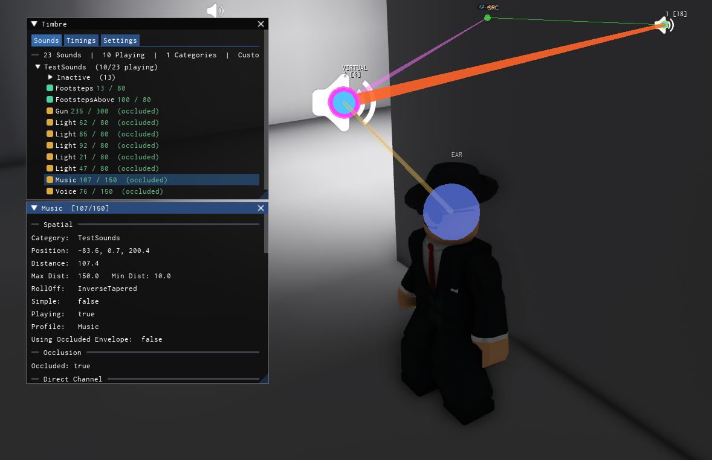
The debug panel has three tabs:
Sounds
A live explorer of every attached sound, organized by the category you passed into Timbre:Attach(). Each category shows how many sounds are playing out of the total. Active sounds display their distance and occlusion state at a glance.
Click any sound to open a detail window showing its full state — position, distance, min/max range, rolloff mode, occlusion status, channel fader and EQ values, the current diffraction path result (cost, angle, bend count, portal muffle), a muffling breakdown of how each factor contributed, and the sound profile if one is set. The diffraction path is also drawn in the 3D viewport as a gizmo so you can see exactly how sound is traveling through your scene.
Timings
A per-subsystem timing breakdown so you can see exactly where your frame budget is being spent. Shows smoothed averages and raw values for total time, sight updates, spatial queries, sort, sound updates, occlusion, diffraction, EQ + fader, reverb, and raycast time. Also displays counts for sounds updated vs. skipped, diffraction computes, occlusion raycasts, path cache hit rate, active sight coroutines, concurrency group silenced sounds, and pool usage.
Settings
Live controls for every Global Setting. You can tweak any value at runtime and see the effect immediately — useful for dialing in frame budgets, stagger limits, interpolation speeds, and other parameters without restarting.
Timbre V1.0 — Please do not redistribute